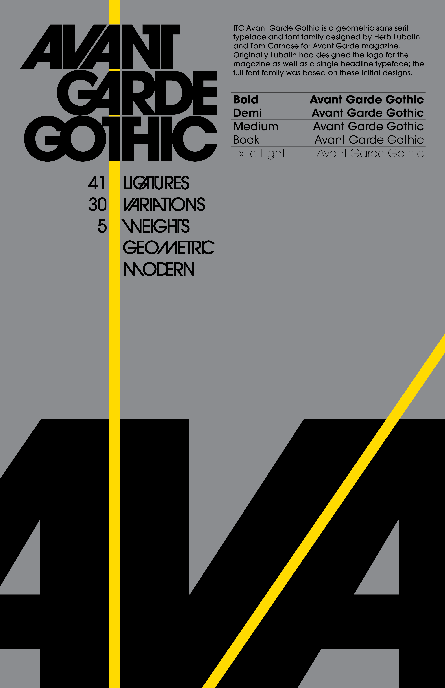

AVANT GARDE GOTHIC TYPE SPECIMEN
OVERVIEW
Designer: Martin Allsbrook
Role: Ideation, Design
Tools used: Illustrator
ABOUT THIS PROJECT
The goal of this project was simply to create a type specimen poster showing off a particular typeface, what makes it unique, and some of its history. I chose the typeface ITC Avant Garde Gothic as I had recently been studying avant garde architecture in another one of my classes and found its extremely geometric forms interesting and fun to play with.
